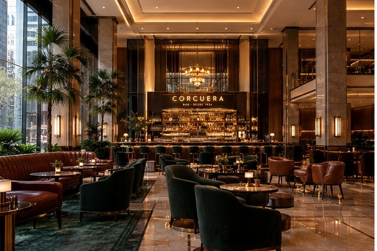
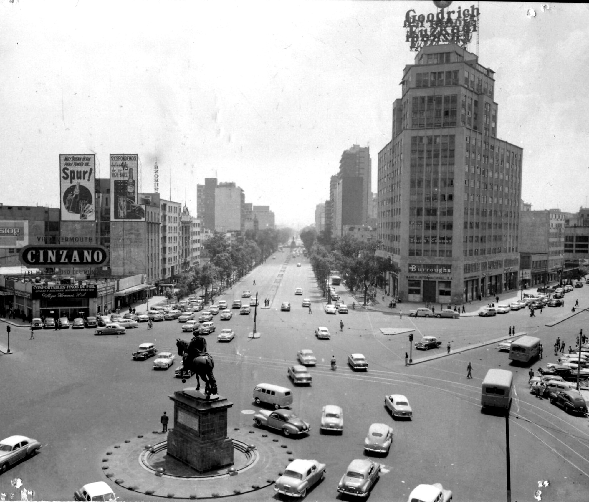
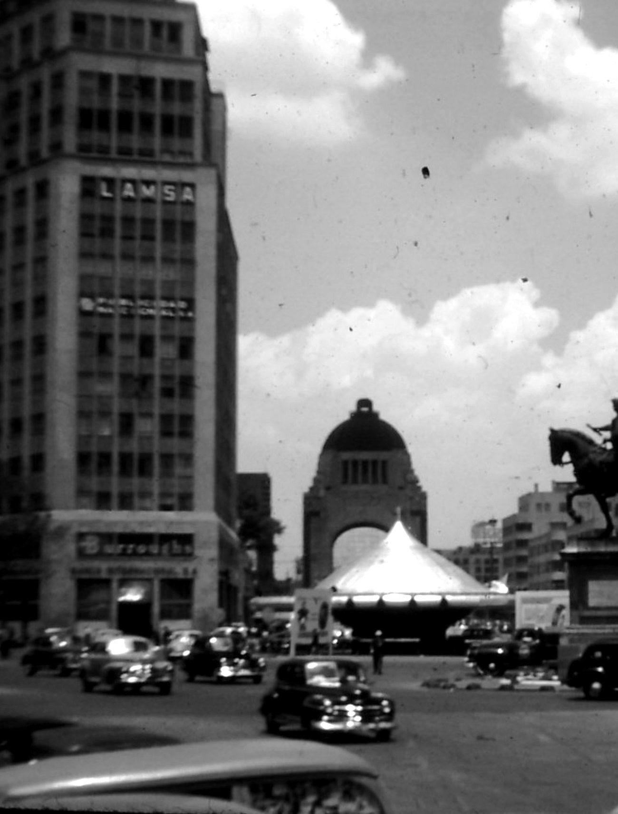
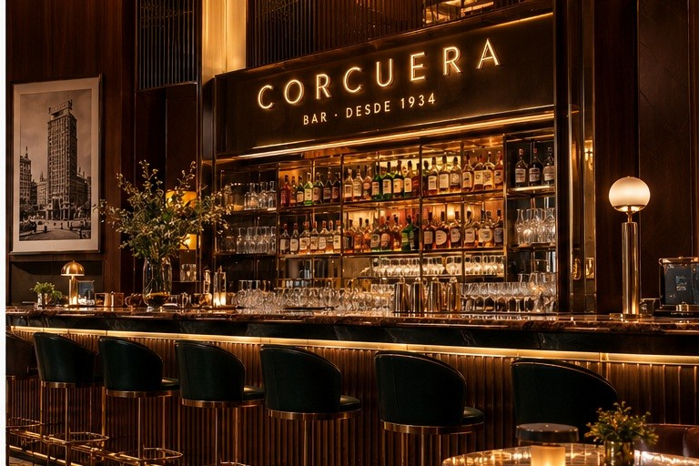
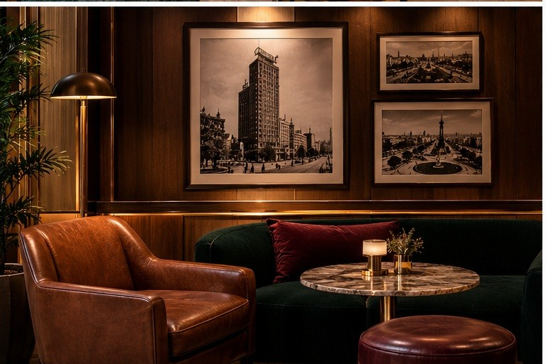
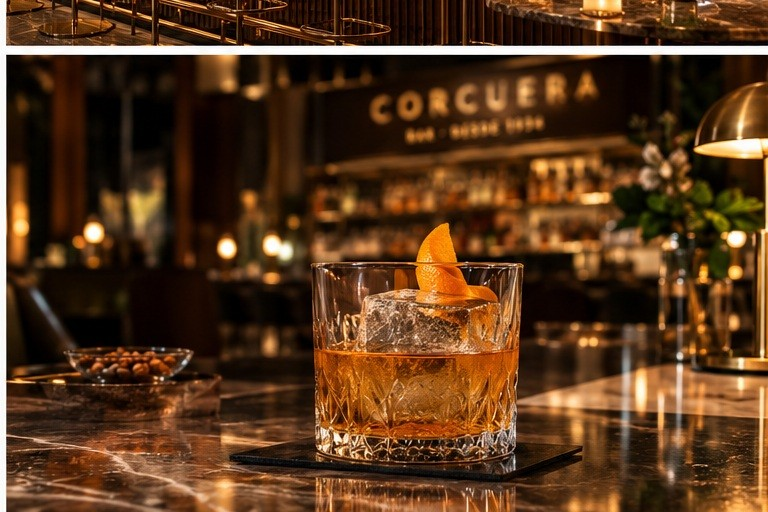

Propuesta de concepto
Bar del lobby · Barceló México Reforma
Corcuera
Bar · desde 1934
Convertir el bar del lobby en un destino de la ciudad, con la historia de su propio terreno.
Propuesta a futuro · se presenta tras un mínimo de 4 meses en el cargo
Borrador interno para validar con la Dirección General
Sergio Berriozábal Serrano · 27 de octubre de 2026


Hacia 1950
Mismo terreno, hoy
Lobby: visualización conceptual generada con IA, no es render de obra. Foto 1950: Museo Archivo de la Fotografía, Gobierno de la CDMX (CC0), vía Wikimedia Commons.

Reforma y Juárez, 1948. A la izquierda, el edificio Corcuera. Foto: Janice Waltzer (CC BY 2.0), vía Wikimedia Commons; pasada a blanco y negro.
La historia verificada
Doce años como el edificio más alto de la ciudad
Se inaugura el edificio Corcuera, en Paseo de la Reforma 1. Toma el nombre de su propietario, Pedro Corcuera Palomar.
Es el edificio más alto de la ciudad, hasta que lo supera El Moro, de la Lotería Nacional. En la azotea luce un gran anuncio luminoso.
Sale de fondo en Ustedes los ricos, en la pelea de Pepe el Toro en una azotea de Avenida Juárez.
El sismo del 28 de julio lo deja seriamente dañado.
Se demuele. La Facultad de Arquitectura de la UNAM la cataloga como la primera demolición técnica de México.
En el mismo terreno está el Barceló México Reforma, cuya fachada guarda reminiscencias del diseño del Corcuera.
Fuentes: Wikipedia (Edificio Corcuera, que cita al Dr. Alejandro Leal, Facultad de Arquitectura UNAM), SkyscraperPage, El Universal «Mochilazo en el tiempo», archivo México de Ayer, Mediateca INAH. Consultadas el 27-oct-2026. Fechas y altura se confirman con fuente primaria antes de imprimir nada.
Por qué un nombre propio
Reforma Uno es una dirección. Corcuera es un destino.
Lo que hay hoy
Un nombre heredado
«Reforma Uno Bar» viene, con toda probabilidad, de la época Krystal Grand Reforma Uno. Abre de 11:00 a 01:00 y casi no aparece en reseñas públicas.
Los bares que atraen a la ciudad tienen historia
Fifty Mils en el Four Seasons, King Cole Bar en el St. Regis y Cityzen en el Sofitel: nombre propio y relato propio.
Continuidad, no ruptura
Corcuera cuenta la historia del mismo terreno. Para el cliente fiel, el bar no cambia de casa: recupera su origen.
Opciones de nombre
Corcuera
Recomendada
Única, ligada al terreno y con una historia que ningún competidor puede copiar.
Es apellido de familia: Jurídico revisa si registrarla en el IMPI exige consentimiento.
Corta y buena para letrero, pero cuenta poco por sí sola.
Suena local por la colonia, pero no es exclusiva del hotel.
Juega con la dirección, pero se parece demasiado al nombre actual.
Fuentes: Estudio completo del hotel (27-oct-2026); webs oficiales de Four Seasons, St. Regis y Sofitel; Wikipedia (Edificio Corcuera). Consultadas el 27-oct-2026. Origen Krystal del nombre actual: [SIN VERIFICAR].
Cómo se vería
Un hotel bar Art Déco, contado en lenguaje de hoy
De lugar de paso a destino: una barra que se ve desde la entrada y una luz ámbar que favorece el ambiente y la foto de producto.
Materiales
Imágenes: visualizaciones conceptuales generadas con IA (ChatGPT, 27-oct-2026). No son fotos del bar actual ni render sobre planos. Distribución y materiales se comprueban sobre el espacio real con Mantenimiento y el corporativo.



La carta
Siete tragos, siete momentos de un rascacielos
Cada coctel cuenta un momento del edificio que estuvo en este terreno. Se pide por su nombre y se sirve con su historia.
Ritual de servicio: al dejar la copa, el bartender cuenta la historia en una sola frase.
Recetas, costos y precios: [por definir con Costos y el bartender].
Ficha técnica · propuesta de base
Corcuera · El coctel de la casa
Versión 0 · a ajustar en cata con el bartender
Formato POE: una receta, una forma de servirla
Vaso old fashioned frío · bloque de hielo claro tallado · piel de naranja expresada · imagen generada con IA
Receta por coctel
Método
1. Enfriar el vaso y colocar el bloque de hielo tallado.
2. Medir con jigger en vaso mezclador con hielo y mover de 20 a 25 segundos.
3. Colar sobre el bloque, expresar la piel de naranja y dejarla en el borde.
4. Servir con la frase del guion.
Costo por coctel (MXN)
Σ (ml usados ÷ ml de la botella × costo de la botella) + hielo + guarnición
Costos de botella y del bloque de hielo: [dato a validar con el hotel]. Precio de venta y costo objetivo: se fijan con Finanzas después del escandallo.
Puntos de control
Medida. Siempre con jigger; nada a ojo.
Hielo. Claro y sin fracturas; si no hay bloque, no se sirve sobre hielo común.
Abasto de hielo. Proveedor de bloque y existencia mínima por turno definidos con Compras. Sin bloque no hay coctel de la casa.
Dilución. Mover lo justo: debe quedar sedoso, no aguado.
Control de botella. Se descarga del inventario por receta, no por botella abierta.
Guion de servicio
Una copa, una frase
El storytelling solo funciona si todo el equipo lo cuenta igual. Esta es la frase que acompaña cada coctel al dejarlo en la mesa.
Tres reglas
Una frase. Si el huésped pregunta, se sigue; si no, se le deja disfrutar.
La ciudad que crece. El sismo solo se menciona si el huésped pregunta, y siempre como la ciudad que siguió adelante.
Solo lo verificado. Nada de datos inventados para lucirse.
«En 1934 abrió aquí el edificio más alto de la ciudad. Así se tomaba un martini entonces.»
“In 1934 the tallest building in the city opened right here. This is how a martini was made back then.”
«El edificio tenía un anuncio luminoso que se veía desde todo Reforma. Este coctel es su homenaje.»
“The building had a neon sign you could see all along Reforma. This drink is our tribute to it.”
«En 1948 el edificio salió en el cine, de fondo en Ustedes los ricos.»
“In 1948 the building appeared on screen, in the background of the classic film Ustedes los ricos.”
«Nuestra dirección, en un vaso: mezcal y cacao que también encuentra en el B-Market del hotel.»
“Our address in a glass: mezcal and cacao you can also find at the hotel’s B-Market.”
«Este bar lleva el nombre del edificio que estuvo aquí, doce años el más alto de la ciudad. Es el coctel de la casa.»
“This bar carries the name of the building that stood here, the city’s tallest for twelve years. This is our house cocktail.”
«Donde hubo un rascacielos, la ciudad siguió creciendo. Para brindar por lo que viene.»
“Where a skyscraper once stood, the city kept growing. A toast to what comes next.”
«Otra época, el mismo lugar. Toda la historia, sin alcohol.»
“Another era, the same ground. All the story, none of the alcohol.”
Formación: 15 minutos en el arranque de turno durante la primera semana; se valida con un servicio de prueba antes de abrir la carta.
Antes de proponerlo
Primero los datos y la marca; después el diseño
Qué validar y con quién
Ventas por hora, ticket medio y mezcla huésped / cliente externo
FinanzasCosto de bebida y control de botellas
Costos · A&BSi la marca Barceló permite nombre propio de outlet
Dirección General · corporativoRegistro de «Corcuera» disponible en el IMPI
JurídicoPermisos de uso de imágenes del INAH
JurídicoEncaje con La Cofradía y Sonora Grill, operados por terceros
Dirección General · JurídicoValor en pesos
Ingreso adicional anual (MXN) = cubiertos externos adicionales × ticket medio × margen de contribución
Los tres datos: [dato a validar con el hotel]. Sin cifra objetivo antes de la línea base.
Riesgos
Marca
Barceló puede tener nombres estándar de outlets. Se pregunta antes de diseñar nada.
El recuerdo del sismo
Se cuenta como renacimiento de la ciudad, nunca como tragedia. Tono revisado con Comunicación.
Inversión sin línea base
Ni montos ni retorno hasta conocer las ventas actuales del bar.
Siguiente paso
Semana 3 del diagnóstico: pedir a Finanzas las ventas por hora del bar y preguntar a la Dirección General si la marca permite nombre propio.